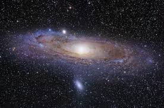

Learn Enough to Be Dangerous is a leader in the movement to teach technical sophistication, the seemingly magical ability to take command of your computer and get it to do your bidding. This includes everything from command lines and coding to guessing keyboard shortcuts, Googling error messages, and knowing when to just reboot the darn thing. We believe there are at least a billion people who can benefit from learning technical sophistication, probably more. To join our movement, sign up for our official email list now.
Learn Enough to Be Dangerous is an outgrowth of the Ruby on Rails Tutorial and the Softcore Publishing Platform. Learn enough html to be dangerous is a tutorial which teaches the basics of HTML or Hyper Text Markup Language. Other programming tutorials can be found at learnenough
The table below does not include all the elements
| Tag | Name | Purpose |
|---|---|---|
h1–Tag |
h2< . > |
h3< . > |
| ------c | ------ur | ------c |